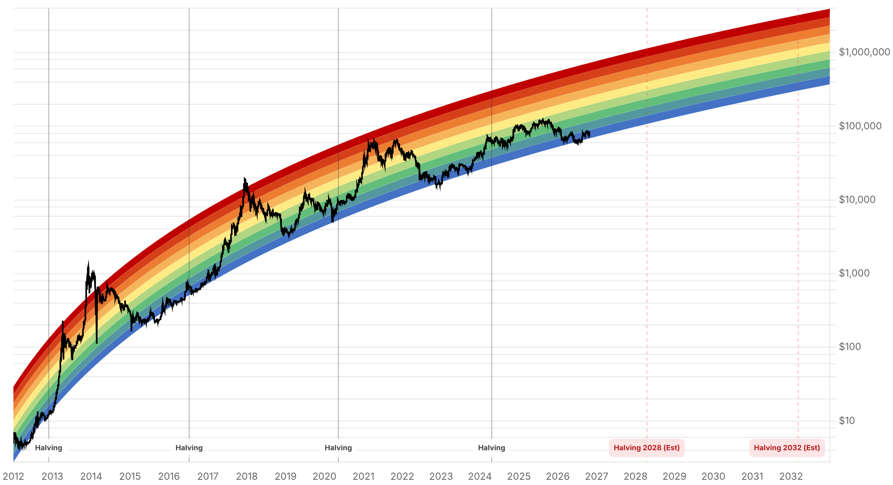

Reporte financiero
BTC cotiza en USD 79.560,52 en vivo (07:18 UTC), -0,56% intradía, extendiendo por segundo día la ruptura de la zona de soporte de USD 80.000-80.700. Lo nuevo desde el reporte de ayer: el precio no marcó un mínimo más bajo que el de ayer (mínimo de hoy USD 79.485,73, por encima del mínimo intradía de ayer de USD 79.343,66), por lo que la caída se está estabilizando justo debajo de los USD 80.000 en vez de acelerarse. El hallazgo más relevante de la jornada es una aclaración clave sobre la reunión de la Fed, que arranca hoy y concluye mañana 28 de octubre (decisión a las 14:00 ET): fuentes consultadas hoy (CNBC, TradingKey, CME FedWatch) coinciden en que la Fed subió tasas en septiembre al rango vigente de 3,75%-4%, y que el debate real para esta reunión es 'mantener vs. subir' -no 'recortar', como sugería la dispersión de fuentes de ayer-, con una probabilidad de mantener sin cambios de entre 90% y 93% según FedWatch, Kalshi y Polymarket, y de apenas ~7-10% para una nueva subida de 25 puntos básicos. Esto resuelve la inconsistencia que señalaba el reporte de ayer sobre la tasa de referencia vigente. En flujos de ETF, SoSoValue confirmó que el 26 de octubre hubo una entrada neta de USD 110,34M (solo IBIT de BlackRock captó dinero), poniendo fin a una racha de dos sesiones de salidas netas -lo que confirma que el 24 y 25 de octubre fueron días de salida neta, aunque sus montos exactos siguen sin poder verificarse con una cifra única y confiable-. El dato del 23 de octubre también sigue disputado entre fuentes (USD 635,6M de salida según The Block vs. USD 137,94M según SoSoValue/TokenPost). El plazo del 23 de octubre que el senador Blumenthal dio a Cantor Fitzgerald para responder sobre su vínculo con Tether ya venció sin ninguna respuesta pública conocida. Sin novedades en el filing de Strategy (sigue en 848.517 BTC desde el 19 de octubre), en la apelación del fallo del Reino Unido sobre los 61.000 BTC, ni en la Clarity Act. El Fear & Greed Index retrocede por tercer día consecutivo, de 50 a 48, manteniéndose en 'Neutral'.
Tras la ruptura del soporte de USD 80.000-80.700 confirmada ayer, el precio de hoy no aceleró la caída: el mínimo intradía de hoy (USD 79.485,73) se mantuvo por encima del mínimo de ayer (USD 79.343,66). El precio en vivo actual es USD 79.560,52 (07:18 UTC, -0,56%), todavía por debajo de los USD 80.000 pero sin confirmar aún una ruptura hacia la banda de USD 75.000-79.700 que los analistas técnicos vienen señalando como escenario alternativo desde el 21 de octubre.
El reporte de ayer señalaba una dispersión creciente entre fuentes sobre la probabilidad de recorte, e incluso desacuerdo sobre la tasa de referencia vigente. Fuentes consultadas hoy (CNBC del 26 de octubre, TradingKey, y lecturas de CME FedWatch, Kalshi y Polymarket) coinciden en un cuadro mucho más claro: la Fed subió tasas en septiembre -la primera alza desde 2023- al rango vigente de 3,75%-4%, y la reunión del 27-28 de octubre (decisión mañana miércoles a las 14:00 ET) se debate entre mantener esa tasa sin cambios (~90-93% de probabilidad según FedWatch/Kalshi/Polymarket) o subirla otros 25 puntos básicos (~7-10%). No hay, en las fuentes de hoy, una probabilidad de recorte relevante sobre la mesa. Esto resuelve -en sentido contrario a lo que parecía ayer- la inconsistencia que se había señalado sobre la tasa vigente.
SoSoValue confirmó una entrada neta de USD 110,34M el 26 de octubre -solo el IBIT de BlackRock captó dinero-, lo que pone fin a una racha de dos sesiones consecutivas de salidas netas. Esto confirma, de forma indirecta, que el 24 y 25 de octubre fueron días de salida neta, aunque sus montos exactos todavía no se pudieron verificar con una fuente única. El dato del 23 de octubre sigue disputado entre fuentes: The Block reportó USD 635,6M de salida neta, mientras SoSoValue/TokenPost reportan USD 137,94M -una diferencia demasiado grande para resolver sin acceso a la tabla diaria completa de Farside o SoSoValue.
El plazo del 23 de octubre que el senador Blumenthal había dado a Cantor Fitzgerald para responder sobre su vínculo con Tether (carta del 8 de octubre, 13 pedidos de registros) ya venció. No se encontró ninguna respuesta pública, extensión de plazo ni escalamiento conocido por parte de Cantor Fitzgerald ni de Tether -el vencimiento sin respuesta es, en sí, un dato nuevo respecto al reporte de ayer, que todavía describía el plazo como vigente.
No se encontró ningún filing o anuncio de Strategy posterior al del 19 de octubre (848.517 BTC en tenencias totales). Tampoco hay novedades en la apelación de Fieldfisher al fallo de la High Court británica sobre los 61.000 BTC (resolución esperada en 2027) ni en la Clarity Act, estancada desde el fracaso de cloture del 15 de septiembre.
Tras bajar de 54 a 50 ayer, el índice retrocede un punto más a 48, extendiendo a tres días consecutivos la tendencia a la baja. Se mantiene dentro de la clasificación 'Neutral', sin cruzar hacia 'Miedo', pero la tendencia de tres días acompaña la estabilización del precio debajo de los USD 80.000.
| Periodo | Valor |
|---|---|
| 21 oct | 84011.97 |
| 22 oct | 81311.89 |
| 23 oct | 81074.19 |
| 24 oct | 80790.84 |
| 25 oct | 80024.01 |
| 26 oct | 80006.66 |
| 27 oct (en vivo) | 79560.52 |
| Periodo | Valor |
|---|---|
| Fear & Greed | 48 |

El precio se mantiene por debajo de los USD 80.000 por segundo día consecutivo, pero sin marcar un mínimo más bajo que el de ayer -la caída se está estabilizando en la zona de USD 79.400-79.600 en vez de acelerarse hacia la banda de USD 75.000-79.700 señalada como escenario alternativo. El catalizador dominante de las próximas 24-48 horas es la decisión de la Fed de mañana 28 de octubre (14:00 ET): a diferencia de la dispersión de ayer, las fuentes de hoy coinciden en que el debate es 'mantener vs. subir' la tasa (no recortar), con ~90-93% de probabilidad de que se mantenga sin cambios el rango vigente de 3,75%-4%.
El flujo de ETF del 26 de octubre confirma una entrada neta de USD 110,34M que corta una racha de dos sesiones de salidas, aunque los montos exactos del 23, 24 y 25 de octubre siguen sin poder verificarse con una cifra única -sigue siendo el punto más importante a cerrar en el próximo reporte, junto con la reacción del precio a la decisión de la Fed de mañana. El rango de consenso de QCP Capital para el Q4 (USD 80.000-90.000) sigue siendo puesto a prueba desde su límite inferior, con el precio actual (USD 79.560) ya por debajo de ese rango por segundo día.
Sin cambios en los objetivos de precio de largo plazo ya reportados en ediciones anteriores (Citigroup, Bernstein, Standard Chartered, Tom Lee, NYDIG, Armstrong) ni en la tesis de acumulación de Strategy (848.517 BTC desde el 19 de octubre). En el frente regulatorio/legal: el plazo de Blumenthal a Cantor Fitzgerald venció el 23 de octubre sin respuesta pública conocida; la apelación del fallo británico sigue con resolución esperada en 2027; y la Clarity Act continúa sin fecha de reintento en el Senado.
A diferencia de la dispersión señalada ayer, las fuentes de hoy convergen en que el escenario base es mantener la tasa sin cambios (~90-93% de probabilidad), con una subida de 25pb como escenario minoritario (~7-10%) y sin un recorte realista sobre la mesa. Aun con esa convergencia, movimientos bruscos de precio son probables en las horas posteriores al anuncio, justo con el soporte técnico de USD 80.000 ya perforado.
El precio no marcó un mínimo más bajo que el de ayer, pero tampoco recuperó los USD 80.000. Vigilar si en los próximos días el precio reclama la zona de USD 80.000-80.700 o si, en cambio, confirma la ruptura hacia la banda de USD 75.000-79.700 ya señalada como escenario alternativo.
El 26 de octubre se confirmó una entrada neta de USD 110,34M (SoSoValue), pero los días previos (23, 24 y 25 de octubre) siguen con cifras disputadas o sin publicar. Tratar la dirección (salida neta en esos días) como más confiable que cualquier monto específico hasta que una fuente primaria (SoSoValue o Farside) publique la tabla completa.